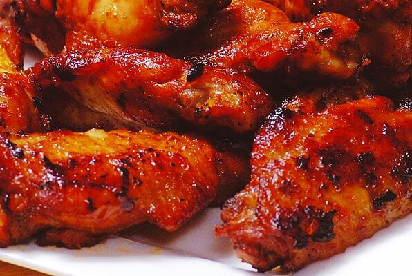

Caramelized Chicken Wings

For this dish, we are going to make Caramelized Chicken Wings
Chicken wings is the best finger foods, especially for watching sports. Want to make your own wings
rather than having to order them? Let's dive into it!
Ingredients
- 1 cup water
- 1/2 cup white sugar
- 1/3 cup soy sauce
- 2 tablespoons peanut butter
- 1 tablespoon honey
- 2 teaspoons wine vinegar
- 1 tablespoon minced garlic
- 12 large chicken wings, tips removed and wings cut in half at joint
- 1 teaspoon sesame seeds, or to taste (Optional)
Steps
- In an electric skillet or a large skillet over medium heat, mix together the water, sugar, soy sauce,
peanut butter, honey, wine vinegar, and garlic until smooth and the sugar has dissolved.
- Place the wings into the sauce, cover, and simmer for 30 minutes.
- Uncover and simmer until the wings are tender and the sauce has thickened, about 30 more minutes, spooning sauce over
wings occasionally.
- Sprinkle with sesame seeds.
Return to Main Page